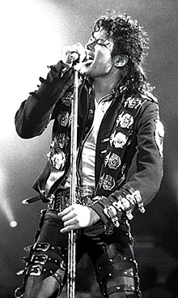

|  | Name | Michael Jackson |
|---|---|---|
| Full Name | Michael Joseph Jackson | |
| Born | August 29, 1958 / Gary, Indiana, U.S | |
| Died | June 25, 2009 (aged 50) / Los Angeles, California, U.S | |
| Cause of death | Acute propofol and benzodiazepine intoxication | |
| Burial place | Forest Lawn Memorial Park, Glendale, California | |
| Occupation | Singer . Songwriter . Dancer . Record producer | |
| Spouse(s) | Lisa Marie Presley(m.1994; div.1996) | Debbie Rowe(m.1996; div.1999) | |
| Children | 3,including Paris | |
| Years active | 1964-2009 |
Michael Joseph Jackson was born in Gary, Indiana on August 29, 1958. He was the eighth of ten children in the Jackson family, a working-class African-American family living in a two-bedroom house on Jackson Street. His mother, Katherine Esther Jackson (née Scruse), played clarinet and piano, had aspired to be a country-and-western performer, and worked part-time at Sears. She was a Jehovah's Witness. His father, Joseph Walter "Joe" Jackson, a former boxer, was a crane operator at U.S. Steel and played guitar with a local rhythm and blues band, the Falcons, to supplement the family's income. Joe's great-grandfather, July "Jack" Gale, was a US Army scout; family lore held that he was also a Native American medicine man. Michael grew up with three sisters (Rebbie, La Toya, and Janet) and five brothers (Jackie, Tito, Jermaine, Marlon, and Randy). A sixth brother, Marlon's twin Brandon, died shortly after birth.
In 1964, Michael and Marlon joined the Jackson Brothers—a band formed by their father which included Jackie, Tito, and Jermaine—as backup musicians playing congas and tambourine. Michael said his father told him he had a "fat nose", and physically and emotionally abused him during rehearsals. He recalled that Joe often sat in a chair with a belt in his hand as he and his siblings rehearsed, ready to punish any mistakes. Joe acknowledged that he regularly whipped Michael. Katherine said that although whipping came to be considered abuse, it was a common way to discipline children when Michael was growing up. Jackie, Tito, Jermaine and Marlon denied that their father was abusive and said that the whippings, which were harder on Michael because he was younger, kept them disciplined and out of trouble. Michael said his youth was lonely and isolated. Later in 1964, Michael began sharing lead vocals with Jermaine, and the group's name was changed to the Jackson 5. In 1965, the group won a talent show; Michael performed the dance to Robert Parker's 1965 song "Barefootin'" and sang the Temptations' "My Girl". From 1966 to 1968, the Jacksons 5 toured the Midwest; they frequently played at a string of black clubs known as the Chitlin' Circuit as the opening act for artists such as Sam & Dave, the O'Jays, Gladys Knight, and Etta James. The Jackson 5 also performed at clubs and cocktail lounges, where striptease shows were featured, and at local auditoriums and high school dances. In August 1967, while touring the East Coast, they won a weekly amateur night concert at the Apollo Theater in Harlem. Jackson (center) as a member of the Jackson 5 in 1972. The group were among the first African American performers to attain a crossover following. The Jackson 5 recorded several songs for a Gary record label, Steeltown Records; their first single, "Big Boy", was released in 1968. Bobby Taylor of Bobby Taylor & the Vancouvers brought the Jackson 5 to Motown after they opened for Taylor at Chicago's Regal Theater in 1968. Taylor produced some of their early Motown recordings, including a version of "Who's Lovin' You". After signing with Motown, the Jackson family relocated to Los Angeles. In 1969, Motown executives decided Diana Ross should introduce the Jackson 5 to the public—partly to bolster her career in television—sending off what was considered Motown's last product of its "production line". The Jackson 5 made their first television appearance in 1969 in the Miss Black America pageant, performing a cover of "It's Your Thing". Rolling Stone later described the young Michael as "a prodigy" with "overwhelming musical gifts" who "quickly emerged as the main draw and lead singer". In January 1970, "I Want You Back" became the first Jackson 5 song to reach number one on the US Billboard Hot 100; it stayed there for four weeks. Three more singles with Motown topped the chart: "ABC", "The Love You Save", and "I'll Be There". In May 1971, the Jackson family moved into a large house at Hayvenhurst, a two-acre estate in Encino, California. During this period, Michael developed from a child performer into a teen idol. Between 1972 and 1975, he released four solo studio albums with Motown: Got to Be There (1972), Ben (1972), Music & Me (1973), and Forever, Michael (1975). "Got to Be There" and "Ben", the title tracks from his first two solo albums, sold well as singles, as did a cover of Bobby Day's "Rockin' Robin". Michael maintained ties to the Jackson 5. The Jackson 5 were later described as "a cutting-edge example of black crossover artists". They were frustrated by Motown's refusal to allow them creative input. Jackson's performance of their top five single "Dancing Machine" on Soul Train popularized the robot dance.
List of songs
| Year | Title | Sold | Income |
|---|---|---|---|
| 1979 | Off the Wall | 20 millian | UK:399,000 |
| 1983 | Thriller | 65-110 millian | US:4,024,398$ |
| 1987 | Bad | 30-45 millian | UK:491,000 |